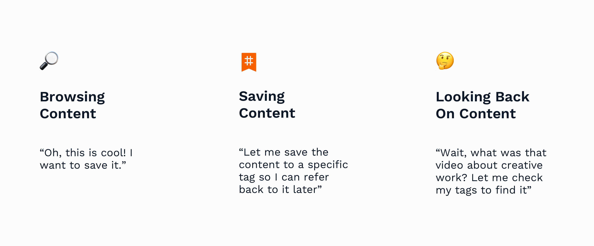

making content aggregation less overwhelming
Fulldive is a content aggregator that organizes and curates content from all over. Its target audience includes people who are interested in taking control of and streamlining their content consumption.
We found that the old bookmarking and tagging features were lacking, exposing a general problem with content categorization. To address this need, I designed a new feature — Saving —on Fulldive.
With Saving, posts can be saved to specific tags. This lets people easily find their previously saved content and gives us data to categorize content.
Role
I led the design for this feature, collaborating with the co-founder, our design manager (Grant), and the CTO.
Problems
How can we better categorize content?
While testing our product, we found some key issues on our platform:
Goals
Research
To see how we could better categorize content, I first conducted an audit on platforms such as Twitter, Facebook, Instagram, and Tumblr to see how they approached filtering mass amounts of content. I also talked to several people to understand how they usually searched and organized content.

Tags page from tumblr soyouwanttowatchfs, an example of using tags for personal organization.
Some key takeaways I identified:

Consolidating our bookmarks and tags system into one save feature.
Ideation
Why would people want to tag on Fulldive?
I centered my ideation around how to motivate tagging on Fulldive. Some initial ideas included gamifying tagging, appointing community managers to manually tag, and randomly prompting users. Based on my research, I found an opportunity in leveraging people's need to organize content to help our platform tag — a feature I called saving. Given our resources, I found saving to be the most promising direction as it directly addressed an existing user need.
Saving - helping people organize their saved content through tagging content
An overview of saving.
Iterations
Building on this initial concept, I iterated and tested various user flows. I also communicated with engineers to determine how this feature would interact with the backend.
An initial flow which got scrapped after user testing revealed various problems with it.
The initial pull-up for Saving was confusing due to too many CTAs.
Key decisions we made include:
Solution
We finally settled on the following flow. While it involves more steps than previous iterations, it communicated the steps clearer. We also anticipated that people wouldn't be going through the whole flow for saving to a new tag often, so it was alright if there more screens.

The flow to be sent to development.
Interaction
I also designed microinteractions in Principle to communicate all aspects of the flow with the engineers.
Rules for naming tags
Along the way, I formulated a set of rules for tagging on the platform to minimize too many similarly named tags.
Interaction for how the platform treats various cases of naming. Tags don't have spaces and aren't case sensitive, so space and capitalization differences are ignored.
Unsaving from the video player
I also had to consider how Saving worked with other areas of the app, such as the video player.
The blue tags are ones the person has saved to a video. While a tap leads to the tag page, a long press allows them to unsave the video. If their's is the only tag of that name on the video, then the tag is completely removed. If others have tagged the video the same name, then the tag just fades color to gray.
Takeaways
Given the nature of this feature, there were some aspects that couldn't be tested in a prototype. I'm excited to continue iterating once it's live!
For now, this project was a good exercise to take from initial high level concepts to the nitty gritty details of microinteractions. It's also an unconventional take on tagging, which was fun to play with.